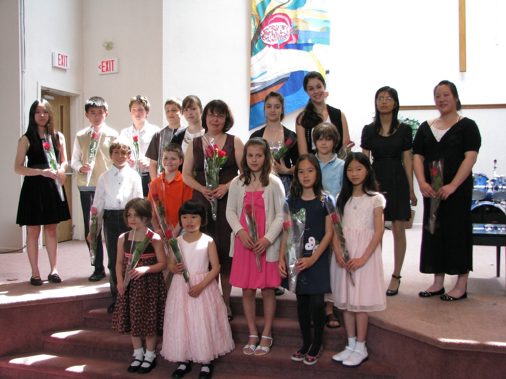

Current Students

- Mila Bobyreva videos
- Arthur Bridson videos
- Eleanor Bridson videos
- Elliot Bridson videos
- Sebastien Croteau videos
- Renan Dobrer videos
- Tal-Claire Dobrer videos
- Alexander Fonarev videos
- Karina Gonchar videos
- Matthew Lai videos
- Raina Liao videos
- Justine Lin videos
- Grace Lokshin videos
- Ben Smus videos
- Meg Wang
Events
BCCM Music Festival, May 2014
Congratulations to all participants and gold certificate recipients:
- Arthur Bridson
- Elliot Bridson
- Renan Dobrer
- Tal-Claire Dobrer
- Matthew Lai, class winner
- Raina Liao
- Justine Lin, class winner
- Grace Lokshin
- Ben Smus
- Meg Wang, class winner
Kiwanis Festival, April 2014
- Mila Bobyreva, Concert Group 5, 1st place
- Raina Liao, Romantic 9, 1st place and festival award
- Meg Wang, Romantic 9, 1st place and scholarship
- Meg Wang, Classical 9, 1st place
- Tal-Claire Dobrer, Concert Group 8, 2nd place
- Raina Liao, Baroque 9, 3rd place
- Tal-Claire Dobrer, Multiple Parts 8, 3rd place
- Matthew Lai, Concerto Class Under 10, 3rd place
Student Performers Guild Festival, November 2013
- Tal-Claire Dobrer, Impressionist Composers, 1st place
- Alexander Fonarev, Concert Group 10, 1st place
- Justine Lin, Twentieth Century Composers 9, 1st place
- Grace Lokshin, Classical Composers 9, 1st place
- Tal-Claire Dobrer, Concert Group 8, 2nd place
- Tal-Claire Dobrer, Baroque Composers 8, 2nd place
- Grace Lokshin, Romantic Composers 9, 2nd place
- Kristy Yang, Adult Competitive 12, 2nd place
Richmond Music Festival, November 2013
- Raina Liao, Classical Composers 9, 1st place
- Elliot Bridson, Concert Group 2, 2nd place
- Renan Dobrer, Concert Group 2, 2nd place (tie with Elliot Bridson)
- Tal-Claire Dobrer, Concert Group 8, 2nd place
- Raina Liao, Romantic Composers 9, 2nd place
- Matthew Lai, Concert Group 6, 2nd place
- Matthew Lai, Twentieth Century Composers 7, 3rd place
BCCM Music Festival, May 2013
- Renan Dobrer, Concert Group 1, class winner
- Tal-Claire Dobrer, Concerto class Under 11. class winner
- Tal-Claire Dobrer, Baroque 7, class winner
- Alexander Fonarev, Concert Group 10, class winner
- Justine Lin, Romantic Composers 9 (section 2), class winner
- Ben Smus, Romantic Composers 9, (section 1), class winner
Vancouver Kiwanis Festival, April 2013
- Elliot Bridson, Concert Group 1, 1st place and festival award
- Alexander Fonarev, Beethoven 10, 1st place
- Matthew Lai, Concert Group 5, 1st place
- Rebecca Lin, Concert Group ARCT, 1st place
- Grace Lokshin, Classical 9, 1st place
- Karina Gonchar, Mozart Sonata 10, 2nd place
- Matthew Lai, Romantic Composers 5, 2nd place
- Raina Liao, Concert Group 8, 2nd place
- Ben Smus, Twentieth Century 7, 2nd place
- Mila Bobyreva, Concert Group 3, 3rd place
- Tal-Claire Dobrer, Concert Group 7, 3rd place
- Sau San Chan, Concert Group ARCT, 3rd place
Richmond Music Festival, November 2012
- Mila Bobyreva, Concert Group 3, 1st place and festival award
- Tal-Claire Dobrer, Concert Group 6, 1st place and festival award
- Grace Lokshin, Concert Group 8, 1st place
- Mathew Lai, Classical Composers 5, 2nd place
- Raina Liao, Concert Group 8, 2nd place
- Rebecca Lin, Whole Sonata ARCT, 3rd place
- Grace Lokshin, Concerto Under 14, 3rd place
- Ben Smus, Baroque 7, 3rd place
BCCM Music Festival, May 2012
- Ron Lu, Studies ARCT, gold certificate and class winner
- Annie Yang, Romantic 8, gold certificate and class winner
- Justine Lin, Classical 8, gold certificate
- Ron Lu, Bach ARCT, gold certificate
- Annie Yang, Baroque 8, gold certificate
- Kristy Yang, Adult Class, gold certificate
Vancouver Kiwanis Festival, April 2012
- Tal Dobrer, Concert Group 5, 1st place
- Alexander Fonarev, Chopin 10, 1st place
- Raina Liao, Concerto 8 years and under, 1st place
- Grace Lokshin, Concert Group 7, 1st place
- Alexander Fonarev, Romantic 10, 2nd place
- Justine Lin, Romantic 8, 2nd place
- Alexander Fonarev, Post-romantic 10, 3rd place
- Rebecca Lin, Post-romantic ARCT, 3rd place
Richmond Music Festival, November 2011
- Mila Bobyreva, Baroque 1, 1st place and festival award
- Tal Dobrer, Concert Group 5, 1st place and festival award
- Raina Liao, Concert Group 6, 1st place and festival award
- Karina Gonchar, Classical 9, 1st place
- Ron Lu, Classical ARCT, 1st place
- Mila Bobyreva, Own Choice 2, 2nd place
- Justine Lin, Concert Group 8, 2nd place
- Justine Lin, Romantic 9, 2nd place
- Ron Lu, Baroque ARCT, 2nd place
- Nika Pereyaslavsky, Own Choice 8, 2nd place
- Ben Smus, Classical 7, 2nd place
- Mila Bobyreva, Classical 1, 3rd place
- Karina Gonchar, Baroque 9, 3rd place
- Karina Gonchar, Romantic 9, 3rd place
- Raina Liao, Canadian 7, 3rd place
- Ron Lu, Romantic ARCT, 3rd place
- Nika Pereyaslavsky, Classical 8, 3rd place
- Ben Smus, Canadian 8, 3rd place
- Sau San Chan, Impressionists ARCT, gold certificate
BCCM Music Festival, May 2011
- Tal Dobrer, Concert Group 4: class winner
- Alexander Fonarev, Bach 9: class winner
- Alexander Fonarev, Chopin 9: class winner
- Alexander Fonarev, Concerto Intermediate: class winner
- Justine Lin, Concert Group 7: class winner and scholarship
- Raina Liao, Bach 6: gold certificate
- Raina Liao, Concerto Intermediate: gold certificate
- Grace Lokshin, Concert Group 7: gold certificate
- Ron Lu, Bach ARCT: gold certificate
- Ben Smus, Classical 5: gold certificate
- Annie Yang, Romantic 7: gold certificate
- Richmond Music Festival, November 2010
- Justine Lin, Canadian Composers 7: 1st place
- Ben Smus, 20th Century 5: 1st place and scholarship
- Raina Liao, Baroque 4: 2nd place
- Ron Lu, Concert Group 10: 2nd place
- Justine Lin, Classical 7: 3rd place
Student Performers’ Guild Festival, November 2010
- Alexander Fonarev, Classical 9: 1st place
- Sebastien Croteau, 20th Century 5: 2nd place
- Sebastien Croteau, Own Choice 5: 2nd place
- Alexander Fonarev, Baroque 9: 2nd place
- Grace Lokshin, Classical 5: 2nd place
- Grace Lokshin, Romantic 5: 2nd place
- Alexander Fonarev, Romantic 9: 3rd place
- Simon Krakovsky, Repertoire 7: 3rd place
BCCM Music Festival, May 2010
- Alexander Fonarev, Intermediate Concert Group: 1st place and scholarship
- Alexander Fonarev, Impressionist Composers Grade 8: 1st place and scholarship
- Raina Liao, Concert Group Grade 3: 1st place and gold medal
- Grace Lokshin, Concert Group Grade 4: 1st place and gold medal
- Ben Smus, Concert Group Grade 5: 1st place and gold medal
- Tal Dobrer, Concert Group Grade 3: gold certificate
- Ron Lu, Concert Group Grade 10: gold certificate
- Vancouver Kiwanis Festival, April 2010
- Alexander Fonarev, Concert Group Grade 7: 1st place
- Alexander Fonarev, Impressionist Composers: 1st place
- Ron Lu, Beethoven Sonatas Grade 10: 1st place
- Simon Krakovsky, Romantic Composers Grade 5: 2nd place
- Ron Lu, 20th Century Composers Grade 10: 3rd place
Richmond Music Festival, November 2009
- Alexander Fonarev, Own Choice Grade 7: 1st place
- Alexander Fonarev, Baroque Grade 7: 2nd place
- Alexander Fonarev, 20th Century Composers Grade 7: 2nd place
- Simon Krakovsky, Own Choice Grade 5: 2nd place
- Grace Lokshin, Baroque Grade 5: 3rd place
- Grace Lokshin, Own Choice Grade 5: 3rd place
- Sebastien Croteau, Own Choice Grade 4: gold certificate
- Tal Dobrer, Own Choice Grade 3: gold certificate
- Ben Smus, Own Choice Grade 4: gold certificate
- Ben Smus, Classical Grade 4: gold certificate
Vancouver Kiwanis Festival, April 2009
- Tal-Claire Dobrer, Concert Group Grade 1: 1st place and gold medal
- Karina Gonchar, Concert Group Grade 7: 2nd place
- Grace Lokshin, Concert Group Grade 2: 3rd place
Richmond Music Festival, November 2008
- Nika Pereyeslavsky, Classical Grade 6: 1st place
- Nika Pereyeslavsky, Own Choice Grade 6: 2nd place
- Ben Smus, Own Choice Grade 2: 2nd place